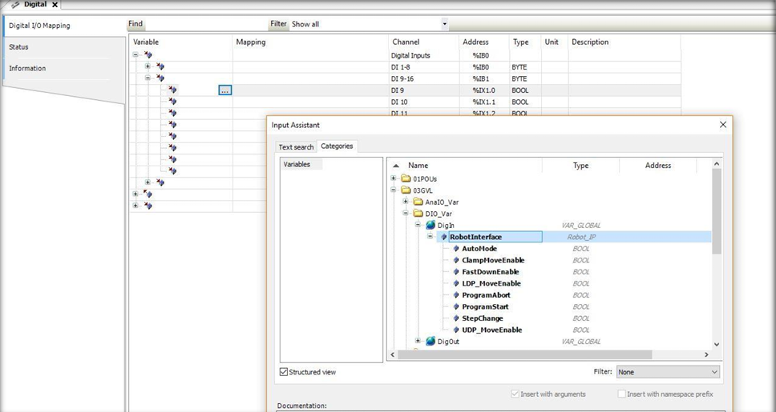
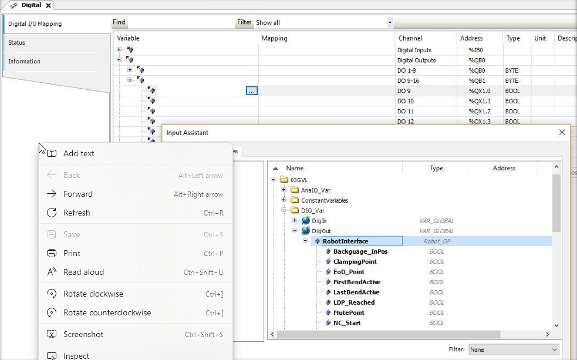
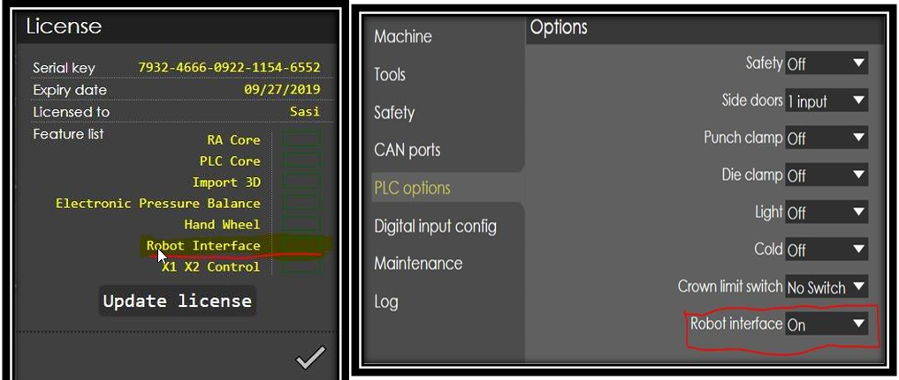
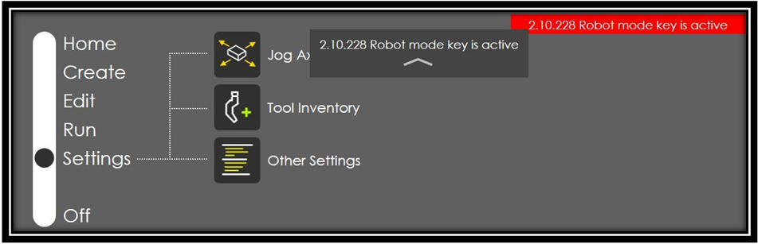
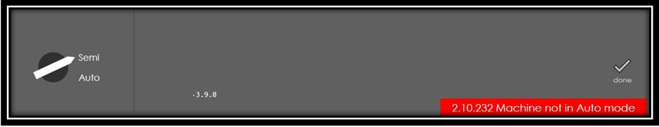
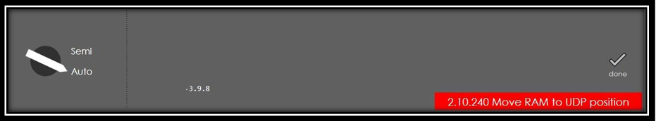
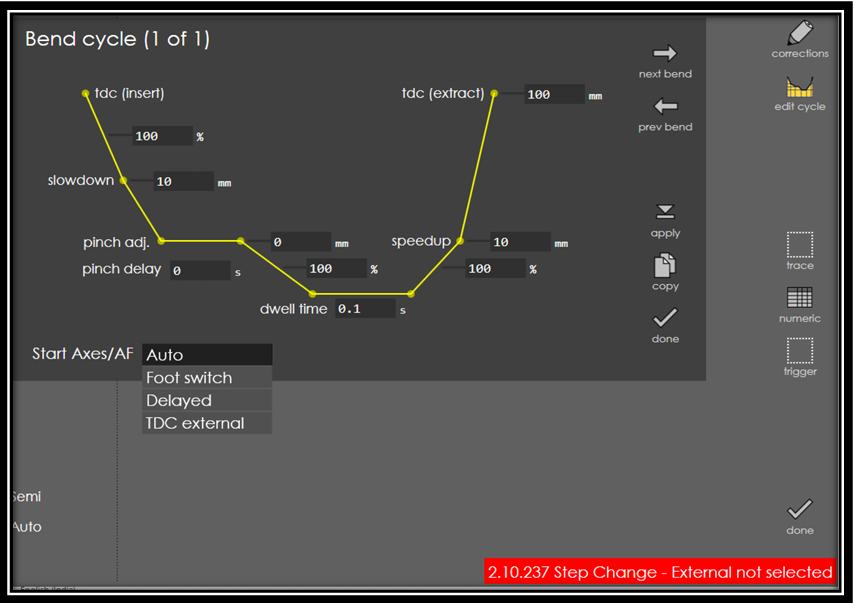
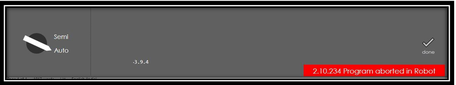

RA interface
Input / Output Configurations:
The above-mentioned Robot Interface signals are mapped in PLC Digital In/Out as shown below:

It may be noted that the NO/NC configuration of Inputs are selected in Parameter page of Robot Interface.

Figure 2 Digital Output Configuration
robot logic
-
The complete Robot Logic will be active, if the license for “Robot Interface” is activated and then the parameter “Robot Option” is ON in the PLC options page.

-
When the “Robot Option” is selected in the PLC, then the input “Robot Auto Mode” will activate the robot functions. If Laser Safe is connected, then the Bend Guard mute is also activated.
-
If all the axes are homed and “Robot Auto Mode” input is active, a message “Robot mode key is active” will be displayed, then the controller goes to “Stop Mode” and “Start Button” control in the machine is transferred to Robot control of “Program Start” input.

-
The input “UDP_MoveEnable” from the Robot will be used as “Foot Pedal Open” signal in order to reset the errors, move the RAM to UDP under error condition etc., except during “Opening Phase”.
-
The “Press OK” output signal from the NC will be ON, if Homing of all the axes are completed, no errors, Program in Auto mode and “Robot Auto Mode” is active.
-
The “NC Start” output signal from the NC will be ON, if “Program Start” input from Robot controller is ON and the controller goes to “Start Mode” (Green Colour LED is ON in the Panel).
-
During this step, if “Program Start” input from Robot controller is ON, there are 3 possibilities of errors as follows:
-
If program in Semi mode, then there is error message “Machine not in Auto Mode”:
-

-
If below the UDP position, then there is error message “Move RAM to UDP position”:

-
If start axes is not selected as “TDC External”, then there is error message “Step Change External not selected”:

-
Once all the above conditions are met and the machine is in start mode, the Foot pedal “Close & Open” signals are not valid hereafter and the machine waits for the Robot move signals.
Foot pedal Close Deactive = “NC Start” is active;
Foot pedal Open Deactive = “NC Start” is active;
-
Now the program will be waiting for “Step change” signal from the Robot controller to initiate the Backguage movements.
-
If this bend cycle is the first bend, then “First Bend Active” signal is high, else if last bend then “Last Bend Active” signal is high, else both the signals will be low. If the program consist only one bend, then both the signals are active.
-
When the “Step change” signal is ON, then the Backguage axes are positioned and the “Backguage InPos” signal is set to High, now the machine will be waiting for the “Fast Down Enable” or “Clamp Move Enable” signal from the robot controller. In this step, the “RAM Moving” signal will be always low.
-
When the “Fast Down Enable” signal is ON, the RAM moves to mute point and the “Below Mute point” signal is set to High, now the machine will be waiting for the “Clamp Move Enable” signal from the robot controller.
-
When the “Clamp Move Enable” signal is ON, the RAM moves to pinch point and the “Clamping point” signal is set to High, now the machine will be waiting for the “LDP Move Enable” signal from the robot controller.
-
When the “LDP Move Enable” signal is ON, the RAM moves to LDP point and the “LDP reached” signal is set to High, now the machine will go to dwell state and waits here until the completion of Dwell time set in the current bend cycle.
-
When the dwell time is completed and “LDP Move Enable” signal is again ON, the RAM is moved up to the decompression point and the “EoD_Point” signal is set to High, , now the machine will be waiting for the “UDP Move Enable” signal from the robot controller.
-
When the “UDP Move Enable” signal is ON, the RAM moves to UDP point and the “UDP reached” signal is set to High, now the machine will be waiting for “Step change” signal from the Robot controller to initiate the Backguage movements for next bend cycle and continuous from step 6 to step 11.
-
From step 7 to step 11, the “RAM Moving” signal will be high during Ram movement and low at the end of each step, to enable the Robot controller to issue the different steps of move command to machine.
-
During any of the above bend step, if the “Program Abort” signal from Robot controller is set High, then all the moving axes (including RAM) are quick stopped and the “Press OK” & “NC Start” signal is deactivated, with the following message display:
